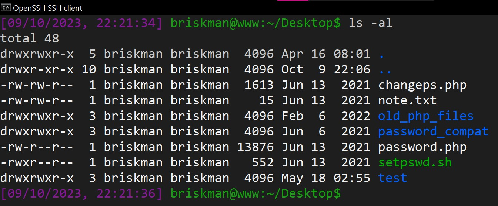

Authorization Mechanisms
- Two common uses for access control lists are file system ACLs and network ACLs. The diagram on the previous slide is an illustration of file system ACLs.
One practical example of the use of file system ACLs is in Linux/UNIX computers, in which each file is associated with 1 owner and a group of users. Each group contains a list of one or more users.
ls -al." alt="Listing files on a Linux device using ls -al command." style = "width: 48vw; z-index: 1000;">Listing files on Linux using ls -al. Miriam Briskman, CC BY-NC 4.0.
 These notes by Miriam Briskman are licensed under CC BY-NC 4.0 and based on sources.
These notes by Miriam Briskman are licensed under CC BY-NC 4.0 and based on sources.